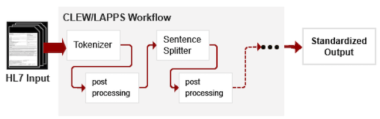

The training set must be selected and prepared meticulously.
A processing pipeline is a group of processes that operates sequentially, with each process passing its results to the next process.
The pipeline tools are commonly used in NLP applications. These and other tools are available on the CLEW workbench.
This process identifies objects, known as tokens. Tokens can be words, numbers, abbreviations, acronyms, or names.
This process identifies an alphanumeric string as a known word by comparing it to a predefined lexicon. This process also collects attributes, also called features, of that word for later use in semantic entity recognition. For example, the string “all” would have the common English meaning, but the string “ALL” would mean “acute lymphocytic leukemia” in a cancer context. Spelling correction can be included in the word recognition process, or a separate process following word recognition.
Also called sentence splitting, this process identifies the beginning and end of each sentence.
Semantic entity recognition (SER). This process identifies the entities of interest to your use case. It is the largest computational function and can be implemented in many ways. SER begins with a gazetteer, or list of words and phrases relevant to the professional community of practice for your use case. In clinical texts, some of the classes of most interest are diseases, body sites, medications, procedures, social history, and clinical events. The U.S. National Library of Medicine’s Metathesaurus is a common gazetteer source. MESH terms, SNOMED CT categories, and time categories also are used.
Statistical NLP is the most advanced method for SER. In Statistical NLP, machine-learning algorithms of the type known as supervised classifiers use the tokens and attributes identified earlier to train a classifier to predict the classes of tokens in unseen texts. Many classifiers are available. Support Vector Machines and Conditional Random Fields are most commonly used in NLP. CLEW does not incorporate any machine learning functions and requires service developers to use their own resources to build their training sets and language models.
Post processing tools can be used to modify output of a pipeline tool to meet the requirements of a particular domain such as the clinical domain. Examples of postprocessing tools are available for use on the CLEW Workbench.

Figure: Example CLEW/LAPPS Pipeline postprocessing tools
Select a machine- learning algorithm, input the training set of data, and evaluate the accuracy of the results. Return to the annotation process and correct missing or incorrect annotations, and repeat until the results are sufficiently accurate and complete. The pipeline is complete when the language modelling operates at high enough accuracy to warrant installation of the service.
If you are using one of the available CLEW services where one of the steps is to create a language model, you can use the Feature Library software included on the workbench to build your language model.
The executable service must be compiled together as a pipeline sequence of processing that identifies all of the tokens in a text and their features, submits the tokens with features for classification, and receives the outputs. The format of the submitted text and the outputs depend on the use case.
Machine learning methods are commonly used to build NLP models. In the environmental scan, ClearTK (https://cleartk.github.io/cleartk/) has been identified as one of the most popular machine learning applications based on the UIMA framework. It provides a common interface and wrappers for popular machine learning libraries (such as LibSVM, CRF and Mallet) and NLP tools (OpenNLP, Stanford CoreNLP, etc.). As such, ClearTK has been utilized in CLEW to train NLP models and perform various of classification tasks, such as clinical semantic entity recognition.
Two machine learning methods were selected from ClearTK to train a classifier/language model for safety surveillance data (FDA’s VAERS data): Conditional Random Field (CRF) and Support Vector Machines (SVM). Classifiers have been built using the ClearTK interface to identify VAERS outcomes of interest (such as diagnosis and second level diagnosis).